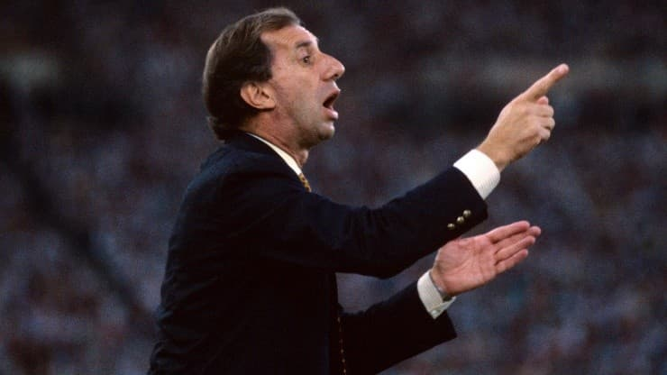
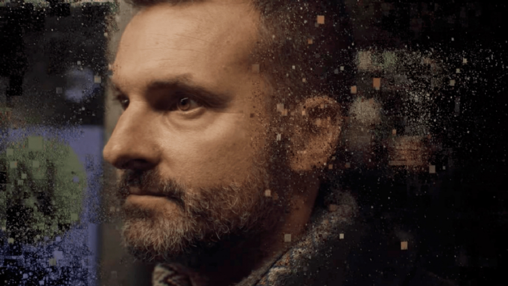
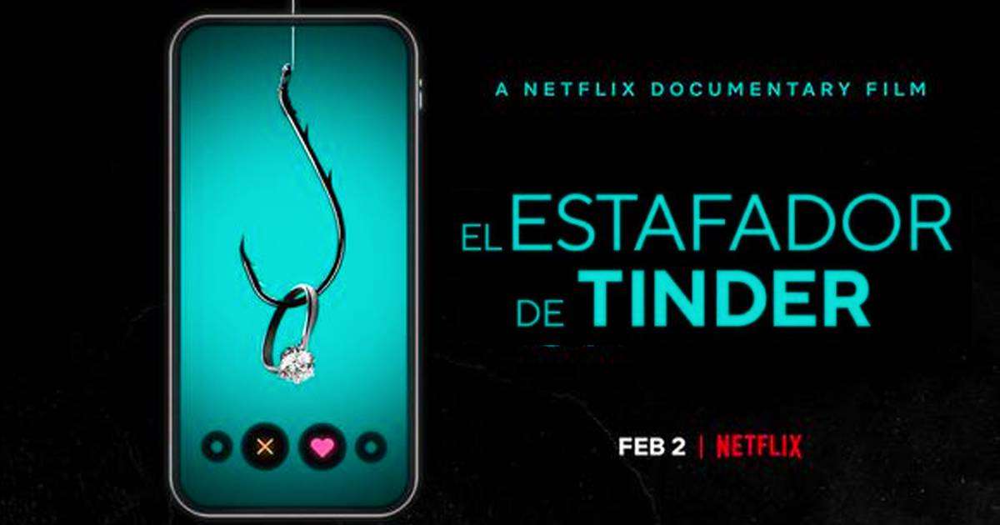
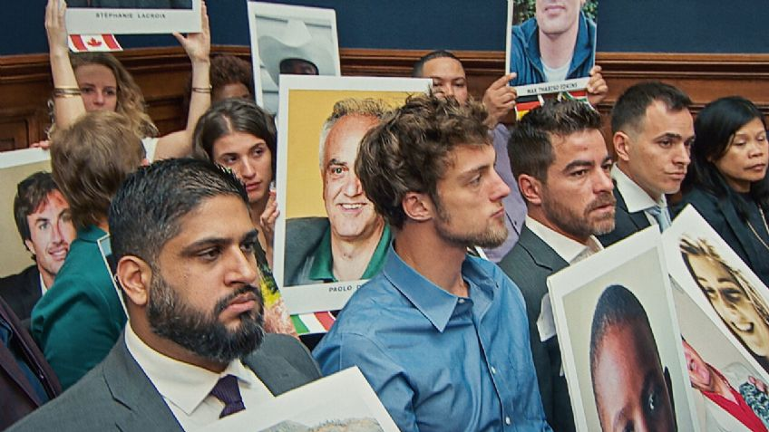

Bilardo, el doctor del fútbol: llega a HBO Max
Cada vez falta menos para el estreno de la docuserie del mítico entrenador en la plataforma y aquí te contamos nuestra opinión sobre sus 4 episodios.

El documental de Netflix que te invitará a reflexionar más seguido
El Gran Hackeo es un documental ideal para entender el mundo de las redes sociales y su relación las campañas electorales. Está disponible en Netflix y tiene una duración de casi dos horas.

¿Te gustó El Estafador de Tinder? 3 documentales similares para ver en Netflix
Si disfrutaste el documental británico y te quedaste con ganas de más, te recomendamos 3 documentales similares que no te puedes perder en Netflix. .

El intrigante documental sobre accidentes aéreos que no te puedes perder en Netflix
Se trata de 'Descenso: El caso contra Boeing', un documental de 2022 que llegó el 18 de febrero a Netflix y que rápidamente se ha ubicado entre lo más visto de la plataforma de streaming.